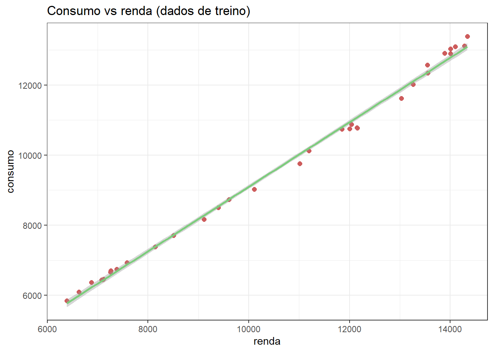
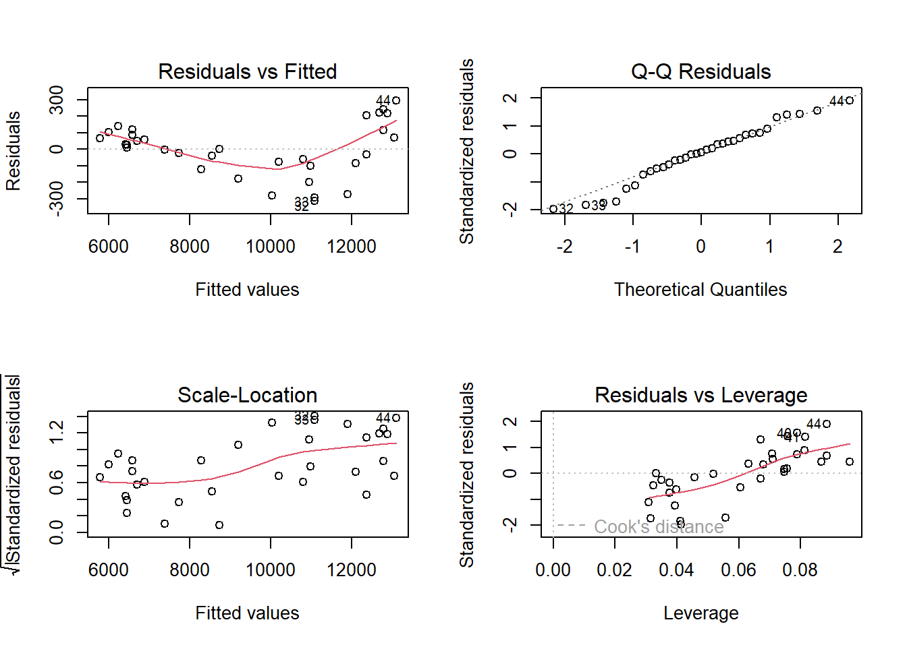
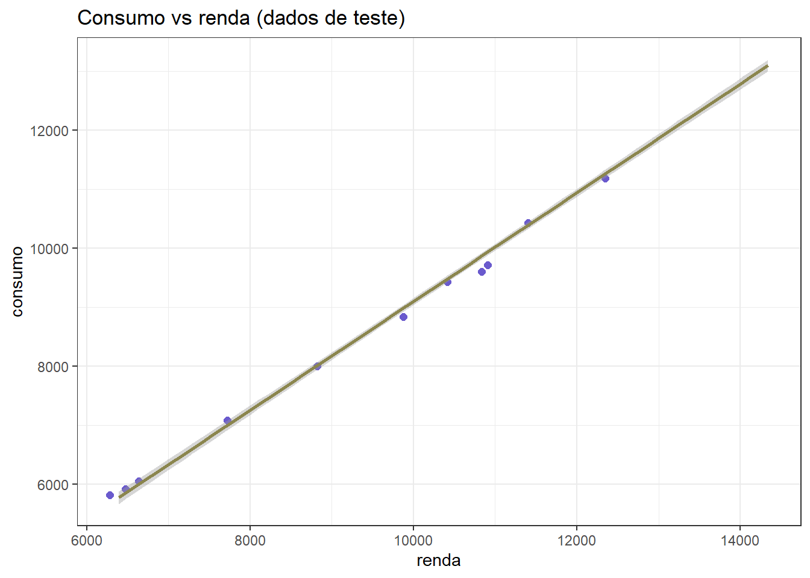
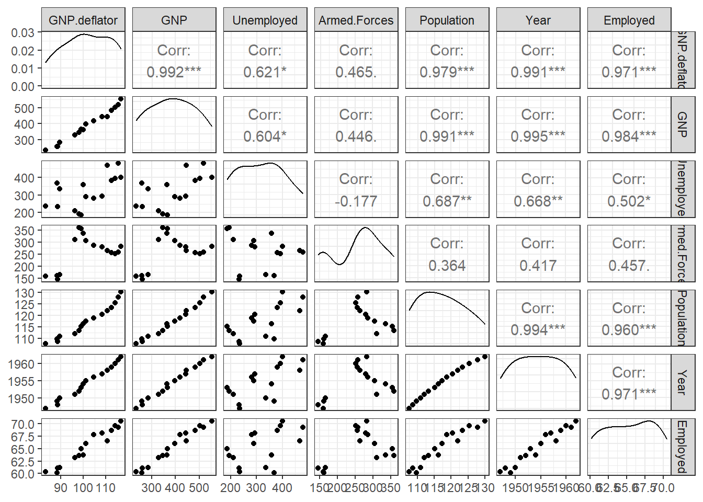
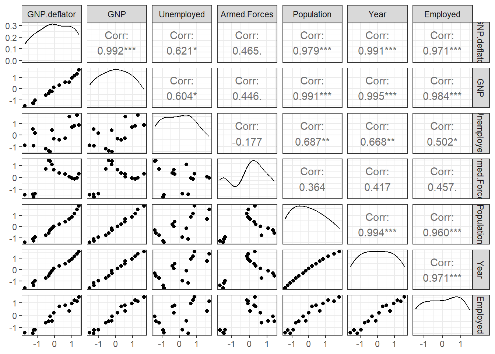
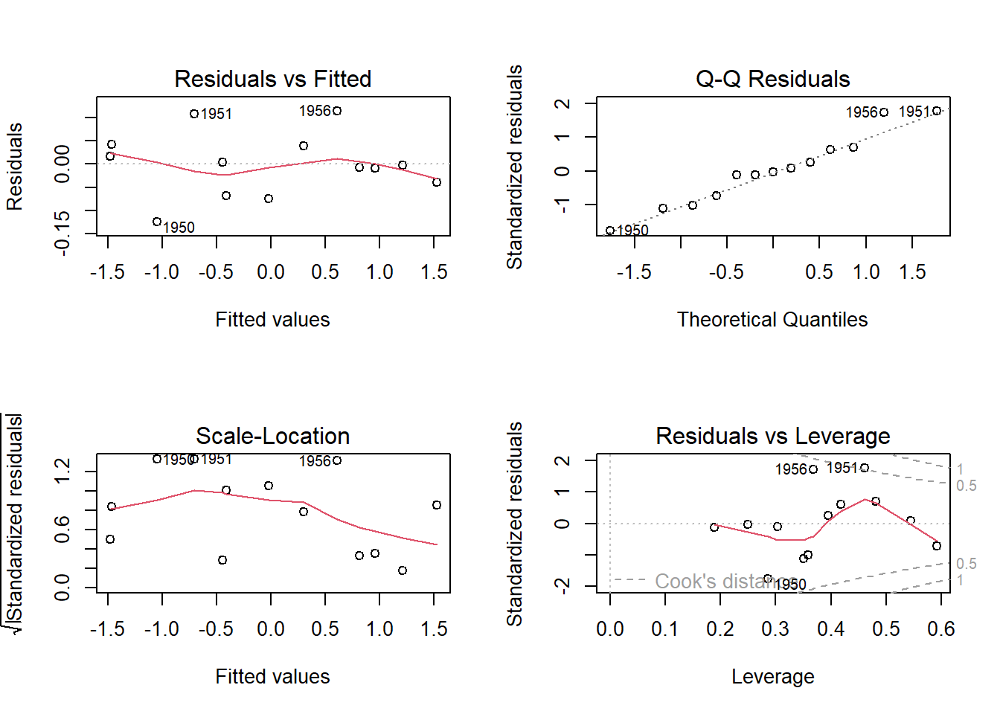
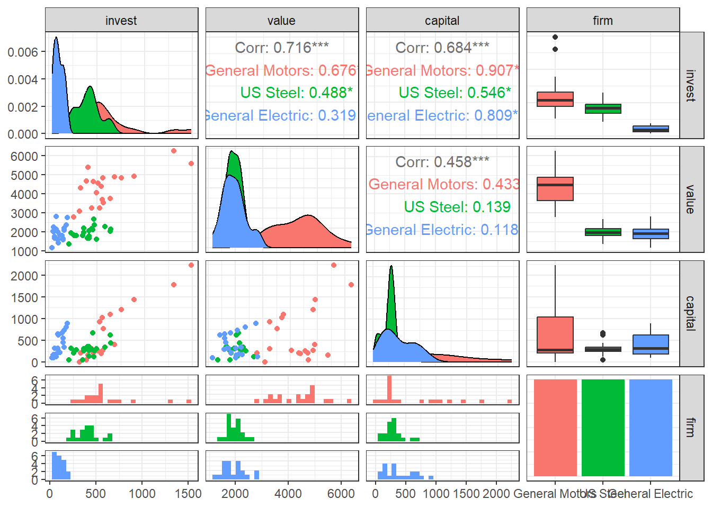
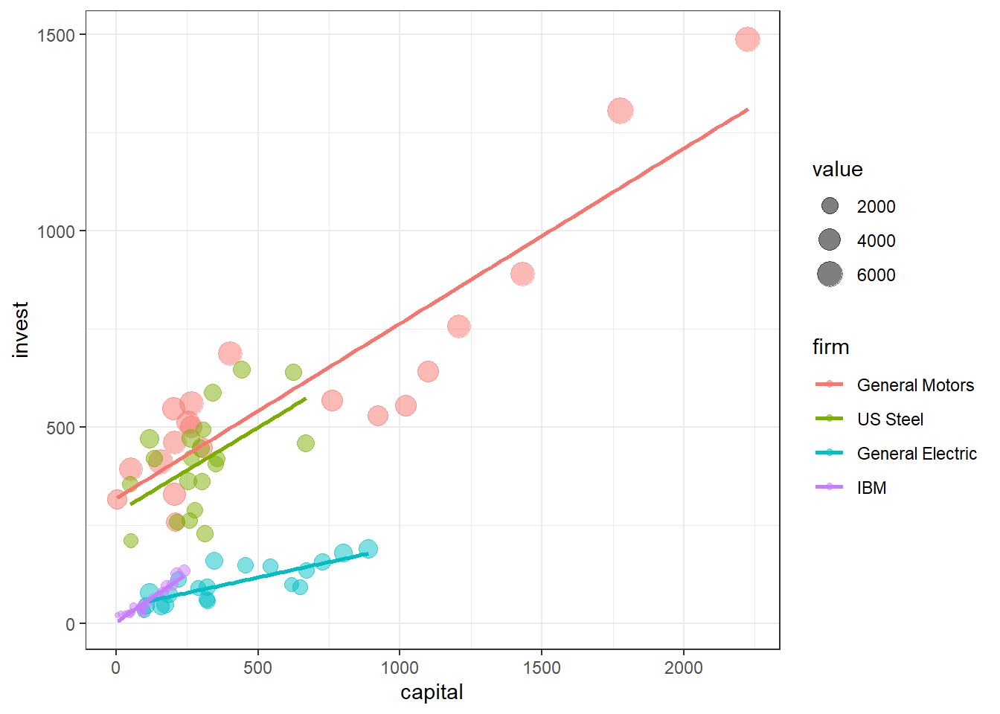
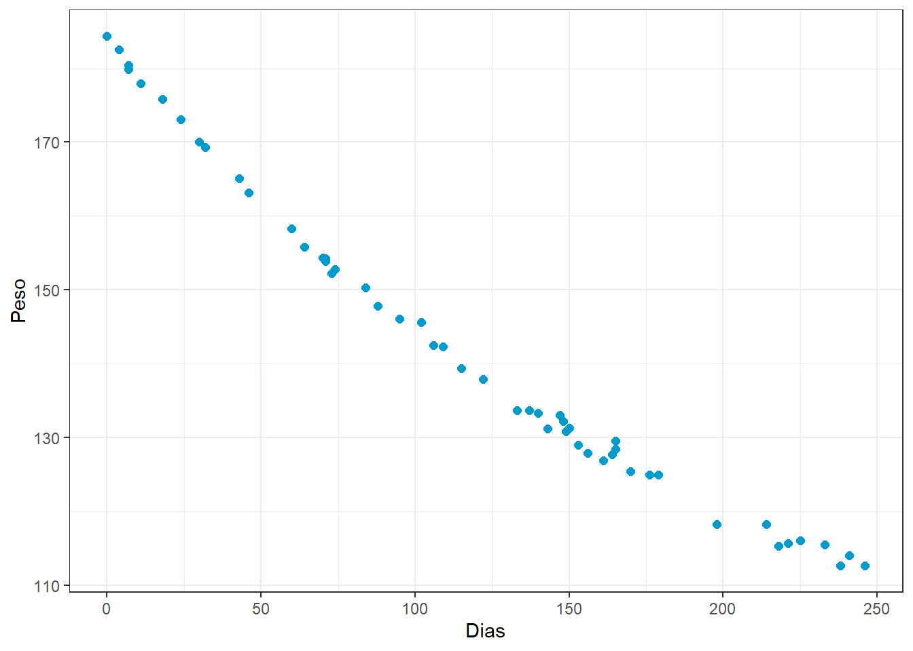
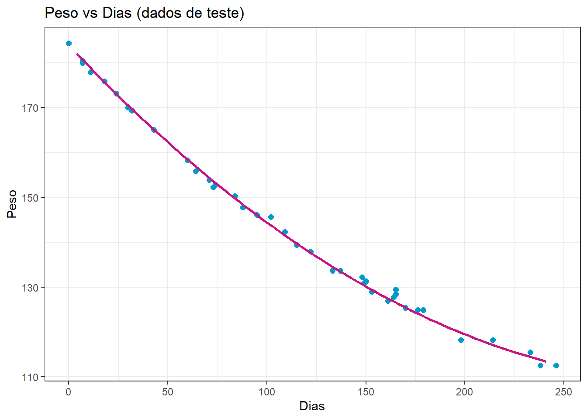

library(AER)
library(ggplot2)Laboratório 3
Laboratório 3 - Regressão linear simples, múltipla e polinomial
Caso 1 - regressão linear simples
Carregando pacotes necessários para dados e gráficos.
Conjunto de dados de consumo e renda.
data(USConsump1993)
# ?USConsump1993
Consumo <- data.frame(USConsump1993)Seprando 75% dos dados para treino do modelo.
set.seed(3)
tr <- round(0.75*nrow(Consumo))
treino <- sample(nrow(Consumo), tr, replace = F)
Consumo.tr <- Consumo[treino,]Obtendo um modelo de regressão linear simples para consumo em função da renda.
lm1 <- lm(expenditure ~ income, data = Consumo.tr)
summary(lm1)
Call:
lm(formula = expenditure ~ income, data = Consumo.tr)
Residuals:
Min 1Q Median 3Q Max
-313.623 -83.314 8.833 105.408 295.489
Coefficients:
Estimate Std. Error t value Pr(>|t|)
(Intercept) -109.28815 110.21510 -0.992 0.329
income 0.92077 0.01016 90.622 <2e-16 ***
---
Signif. codes: 0 '***' 0.001 '**' 0.01 '*' 0.05 '.' 0.1 ' ' 1
Residual standard error: 162.5 on 31 degrees of freedom
Multiple R-squared: 0.9962, Adjusted R-squared: 0.9961
F-statistic: 8212 on 1 and 31 DF, p-value: < 2.2e-16Visualizando modelo com dados de treino.
ggplot(data = Consumo.tr, aes(x = income, y = expenditure)) +
geom_point(color = 'indianred', size = 2) +
geom_smooth(method = "lm", formula = y ~ x, col = "palegreen3") +
ggtitle("Consumo vs renda (dados de treino)") +
xlab("renda") +
ylab("consumo") + theme_bw()
Função de métricas de desempenho para avaliar o modelo.
metrics <- function(obs, pred) {
RSE <- sum((obs - pred)^2)
SST <- sum((obs - mean(obs))^2)
R2 <- 1 - RSE/SST
MAE <- mean(abs(obs - pred))
RMSE <- sqrt(mean((obs - pred)^2))
return(
data.frame(RMSE = RMSE,
MAE = MAE,
R2 = R2))
}Avaliando o modelo considerando os dados de treino.
metrics(Consumo.tr$expenditure, lm1$fitted.values) RMSE MAE R2
1 157.4918 125.1542 0.9962394Avaliando os resíduos do modelo.
shapiro.test(lm1$residuals)
Shapiro-Wilk normality test
data: lm1$residuals
W = 0.97032, p-value = 0.4891par(mfrow=c(2,2))
plot(lm1)
Utilizando o modelo para previsão com dados de teste (dados futuros) e avaliando modelo com dados de teste. Esta avaliação é importante para verificar a capacidade de generalização do modelo.
Consumo.te <- Consumo[-treino,]
pred.te <- predict(lm1, newdata = data.frame(income = Consumo.te$income))
metrics(Consumo.te$expenditure, pred.te) RMSE MAE R2
1 129.4227 104.623 0.9949413Plotando modelo com dados de teste.
ggplot() +
geom_point(data = Consumo.te, mapping = aes(x = income, y = expenditure),
color = 'slateblue', size = 2) +
geom_smooth(data = Consumo.tr, method = "lm", formula = y ~ x,
mapping = aes(x = income, y = expenditure), col = "khaki4") +
ggtitle("Consumo vs renda (dados de teste)") +
xlab("renda") +
ylab("consumo") + theme_bw()
Regressão linear múltipla
Carregando pacote para dados e gráfico.
library(caTools)
library(GGally)Exemplo de dados macroeconômicos para regressão linear múltipla.
data(longley)
# ?longley
dim(longley)[1] 16 7head(longley) GNP.deflator GNP Unemployed Armed.Forces Population Year Employed
1947 83.0 234.289 235.6 159.0 107.608 1947 60.323
1948 88.5 259.426 232.5 145.6 108.632 1948 61.122
1949 88.2 258.054 368.2 161.6 109.773 1949 60.171
1950 89.5 284.599 335.1 165.0 110.929 1950 61.187
1951 96.2 328.975 209.9 309.9 112.075 1951 63.221
1952 98.1 346.999 193.2 359.4 113.270 1952 63.639Visualizando dados.
ggpairs(longley) + theme_bw()
É importante padronizar os dados, especialmente os preditores, para evitar efeitos de escala e unidades de medida.
longley_scaled <- data.frame(scale(longley))ggpairs(longley_scaled) + theme_bw()
Dividindo dados de treino e teste.
set.seed(45)
tr <- round(0.8*nrow(longley_scaled),0)
treino <- sample(nrow(longley_scaled), tr, replace = F)
longley.tr <- longley_scaled[treino,]
longley.te <- longley_scaled[-treino,]Regressão múltipla.
lm_mult <- lm(Employed ~., longley.tr)
summary(lm_mult)
Call:
lm(formula = Employed ~ ., data = longley.tr)
Residuals:
Min 1Q Median 3Q Max
-0.116622 -0.033371 0.002484 0.031364 0.121138
Coefficients:
Estimate Std. Error t value Pr(>|t|)
(Intercept) -0.006058 0.025665 -0.236 0.82123
GNP.deflator 0.154006 0.487336 0.316 0.76269
GNP -1.252420 1.218841 -1.028 0.34379
Unemployed -0.594009 0.165152 -3.597 0.01141 *
Armed.Forces -0.233556 0.061149 -3.819 0.00877 **
Population -0.092484 0.677281 -0.137 0.89585
Year 2.629894 0.676141 3.890 0.00808 **
---
Signif. codes: 0 '***' 0.001 '**' 0.01 '*' 0.05 '.' 0.1 ' ' 1
Residual standard error: 0.09174 on 6 degrees of freedom
Multiple R-squared: 0.9959, Adjusted R-squared: 0.9917
F-statistic: 241.1 on 6 and 6 DF, p-value: 7.003e-07Obtendo os coeficientes com as equações normais de mínimos quadrados.
X <- model.matrix(~., data =longley.tr[,-7])
X (Intercept) GNP.deflator GNP Unemployed Armed.Forces Population
1951 1 -0.5079204 -0.5908091 -1.1710587 0.70742726 -0.7689652
1957 1 0.6225934 0.5540580 -0.2753583 0.27490604 0.4342950
1960 1 1.1600508 1.1560203 0.7894229 -0.13318708 1.1420190
1953 1 -0.2484582 -0.2244927 -1.4161189 1.35117978 -0.3349577
1956 1 0.2704662 0.3167321 -0.3973534 0.35968594 0.1883239
1949 1 -1.2492409 -1.3043364 0.5229601 -1.42356602 -1.0998977
1959 1 1.0117867 0.9558390 0.6631474 -0.07858307 0.8542141
1952 1 -0.3318568 -0.4094719 -1.3497707 1.41871632 -0.5971736
1950 1 -1.1287763 -1.0372705 0.1687464 -1.37470980 -0.9337126
1954 1 -0.1557931 -0.2473611 0.4116664 1.06810111 -0.1732292
1958 1 0.8449896 0.5719362 1.5920219 0.04355747 0.6506518
1947 1 -1.7310992 -1.5434331 -0.8960348 -1.46092666 -1.4111352
1962 1 1.4102465 1.6821336 0.8707530 0.31657752 1.8195537
Year
1951 -0.7351470
1957 0.5251050
1960 1.1552311
1953 -0.3150630
1956 0.3150630
1949 -1.1552311
1959 0.9451891
1952 -0.5251050
1950 -0.9451891
1954 -0.1050210
1958 0.7351470
1947 -1.5753151
1962 1.5753151
attr(,"assign")
[1] 0 1 2 3 4 5 6y <- longley.tr$Employed
beta_mat <- solve(t(X)%*%X)%*%t(X)%*%y
beta_mat [,1]
(Intercept) -0.006058494
GNP.deflator 0.154006386
GNP -1.252419887
Unemployed -0.594008870
Armed.Forces -0.233556488
Population -0.092484035
Year 2.629893534Existem algoritmos de seleção de variáveis que permitem a melhora do ajuste do modelo considerando a remoção de coeficientes não significativos. Um deles é a eliminação para trás. O critério de informação de Akaike, o qual leva em conta o erro dos modelos e a complexidade, é usado para selecionar os modelos.
lm_mult_red <- step(lm_mult, direction = "back")Start: AIC=-58.16
Employed ~ GNP.deflator + GNP + Unemployed + Armed.Forces + Population +
Year
Df Sum of Sq RSS AIC
- Population 1 0.000157 0.050653 -60.120
- GNP.deflator 1 0.000840 0.051337 -59.946
<none> 0.050496 -58.160
- GNP 1 0.008886 0.059382 -58.053
- Unemployed 1 0.108874 0.159370 -45.219
- Armed.Forces 1 0.122775 0.173271 -44.132
- Year 1 0.127324 0.177820 -43.795
Step: AIC=-60.12
Employed ~ GNP.deflator + GNP + Unemployed + Armed.Forces + Year
Df Sum of Sq RSS AIC
- GNP.deflator 1 0.00533 0.05598 -60.820
<none> 0.05065 -60.120
- GNP 1 0.04735 0.09801 -53.540
- Year 1 0.13005 0.18070 -45.586
- Armed.Forces 1 0.16981 0.22046 -43.001
- Unemployed 1 0.32078 0.37143 -36.219
Step: AIC=-60.82
Employed ~ GNP + Unemployed + Armed.Forces + Year
Df Sum of Sq RSS AIC
<none> 0.05598 -60.820
- GNP 1 0.044043 0.10002 -55.275
- Year 1 0.154642 0.21062 -45.594
- Armed.Forces 1 0.188671 0.24465 -43.647
- Unemployed 1 0.315797 0.37178 -38.207summary(lm_mult_red)
Call:
lm(formula = Employed ~ GNP + Unemployed + Armed.Forces + Year,
data = longley.tr)
Residuals:
Min 1Q Median 3Q Max
-0.124653 -0.039041 -0.002178 0.039448 0.114711
Coefficients:
Estimate Std. Error t value Pr(>|t|)
(Intercept) -0.006174 0.023368 -0.264 0.79830
GNP -1.336743 0.532824 -2.509 0.03644 *
Unemployed -0.604450 0.089976 -6.718 0.00015 ***
Armed.Forces -0.216546 0.041703 -5.193 0.00083 ***
Year 2.779766 0.591313 4.701 0.00154 **
---
Signif. codes: 0 '***' 0.001 '**' 0.01 '*' 0.05 '.' 0.1 ' ' 1
Residual standard error: 0.08365 on 8 degrees of freedom
Multiple R-squared: 0.9954, Adjusted R-squared: 0.9931
F-statistic: 434.8 on 4 and 8 DF, p-value: 2.19e-09Avaliando o modelo considerando os dados de treino.
metrics(longley.tr$Employed, lm_mult_red$fitted.values) RMSE MAE R2
1 0.06562145 0.05009978 0.9954209Avaliando os resíduos do modelo.
shapiro.test(lm_mult_red$residuals)
Shapiro-Wilk normality test
data: lm_mult_red$residuals
W = 0.96685, p-value = 0.854par(mfrow=c(2,2))
plot(lm_mult_red)
Avaliando o modelo com dados de teste.
pred_mult.te <- predict(lm_mult_red, newdata=longley.te)
metrics(longley.te$Employed, pred_mult.te) RMSE MAE R2
1 0.08438488 0.06111778 0.9922761Regressão múltipla com variáveis categóricas
Pacote para dados e para codificação de variáveis dummy ou dicotômicas.
library(AER)
library(fastDummies)
library(dplyr)Carregando conjunto de dados com variáveis contínuas e uma categórica.
data(Grunfeld)
# ?Grunfeld
head(Grunfeld) invest value capital firm year
1 317.6 3078.5 2.8 General Motors 1935
2 391.8 4661.7 52.6 General Motors 1936
3 410.6 5387.1 156.9 General Motors 1937
4 257.7 2792.2 209.2 General Motors 1938
5 330.8 4313.2 203.4 General Motors 1939
6 461.2 4643.9 207.2 General Motors 1940Visualizando dados.
ggpairs(Grunfeld[1:60,], columns = 1:4, aes(color = firm)) + theme_bw()
levels(Grunfeld$firm) [1] "General Motors" "US Steel" "General Electric"
[4] "Chrysler" "Atlantic Refining" "IBM"
[7] "Union Oil" "Westinghouse" "Goodyear"
[10] "Diamond Match" "American Steel" Codificando a variável firm em variáveis binárias.
Grunfeld2 <- dummy_cols(Grunfeld, select_columns = c("firm"))
Grunfeld2 <- Grunfeld2[,-c(4,16)] # removendo coluna da variável "firm" e coluna da última variável binária criada, a qual é desnecessária
head(Grunfeld) invest value capital firm year
1 317.6 3078.5 2.8 General Motors 1935
2 391.8 4661.7 52.6 General Motors 1936
3 410.6 5387.1 156.9 General Motors 1937
4 257.7 2792.2 209.2 General Motors 1938
5 330.8 4313.2 203.4 General Motors 1939
6 461.2 4643.9 207.2 General Motors 1940Padronizando variáveis regressoras contínuas.
Grunfeld2[,2:4] <- scale(Grunfeld2[,2:4])Dividindo dados de treino e teste.
set.seed(87)
tr <- round(0.8*nrow(Grunfeld2),0)
treino <- sample(nrow(Grunfeld2), tr, replace = F)
Grunfeld.tr <- Grunfeld2[treino,]
Grunfeld.te <- Grunfeld2[-treino,]Modelo de regressão linear múltipla com variáveis contínuas e categóricas.
lm_invest <- lm(invest ~ ., Grunfeld.tr)
summary(lm_invest)
Call:
lm(formula = invest ~ ., data = Grunfeld.tr)
Residuals:
Min 1Q Median 3Q Max
-178.893 -12.053 0.627 11.396 189.491
Coefficients:
Estimate Std. Error t value Pr(>|t|)
(Intercept) 162.662 15.049 10.809 < 2e-16 ***
value 141.797 14.366 9.870 < 2e-16 ***
capital 81.955 7.116 11.517 < 2e-16 ***
year -5.467 4.741 -1.153 0.250529
`firm_General Motors` -37.591 48.304 -0.778 0.437578
`firm_US Steel` 119.186 26.477 4.502 1.28e-05 ***
`firm_General Electric` -210.179 26.364 -7.972 2.64e-13 ***
firm_Chrysler -9.444 17.355 -0.544 0.587064
`firm_Atlantic Refining` -83.958 19.098 -4.396 1.99e-05 ***
firm_IBM -3.554 16.696 -0.213 0.831707
`firm_Union Oil` -34.936 16.763 -2.084 0.038715 *
firm_Westinghouse -35.177 17.165 -2.049 0.042038 *
firm_Goodyear -60.733 17.504 -3.470 0.000668 ***
`firm_Diamond Match` 11.548 15.646 0.738 0.461520
---
Signif. codes: 0 '***' 0.001 '**' 0.01 '*' 0.05 '.' 0.1 ' ' 1
Residual standard error: 46.68 on 162 degrees of freedom
Multiple R-squared: 0.9448, Adjusted R-squared: 0.9404
F-statistic: 213.3 on 13 and 162 DF, p-value: < 2.2e-16Outra forma de inclusão de variáveis dummy em modelos de regressão múltipla é na inetração. A diferença é que no caso anterior as variáveis dummy mudam apenas a constante, enquanto neste caso, vão mudar a inclinação.
Supondo o caso da empresa General Electric que no gráfico pairs aparenta ter inclinação distinta das demais.
lm_invest2 <- lm(invest ~ . + I(capital*`firm_General Electric`), Grunfeld.tr)
summary(lm_invest2)
Call:
lm(formula = invest ~ . + I(capital * `firm_General Electric`),
data = Grunfeld.tr)
Residuals:
Min 1Q Median 3Q Max
-179.22 -12.00 1.06 12.39 184.42
Coefficients:
Estimate Std. Error t value Pr(>|t|)
(Intercept) 163.389 14.679 11.131 < 2e-16 ***
value 137.675 14.076 9.781 < 2e-16 ***
capital 87.834 7.203 12.194 < 2e-16 ***
year -4.245 4.641 -0.915 0.361718
`firm_General Motors` -34.125 47.124 -0.724 0.470018
`firm_US Steel` 121.936 25.838 4.719 5.11e-06 ***
`firm_General Electric` -193.220 26.307 -7.345 9.71e-12 ***
firm_Chrysler -8.519 16.928 -0.503 0.615497
`firm_Atlantic Refining` -92.113 18.817 -4.895 2.37e-06 ***
firm_IBM -3.521 16.284 -0.216 0.829092
`firm_Union Oil` -38.768 16.397 -2.364 0.019253 *
firm_Westinghouse -33.498 16.749 -2.000 0.047185 *
firm_Goodyear -64.341 17.112 -3.760 0.000237 ***
`firm_Diamond Match` 12.949 15.266 0.848 0.397568
I(capital * `firm_General Electric`) -44.741 14.660 -3.052 0.002662 **
---
Signif. codes: 0 '***' 0.001 '**' 0.01 '*' 0.05 '.' 0.1 ' ' 1
Residual standard error: 45.53 on 161 degrees of freedom
Multiple R-squared: 0.9478, Adjusted R-squared: 0.9433
F-statistic: 208.9 on 14 and 161 DF, p-value: < 2.2e-16O gráfico a seguir ilustra a mudança da inclinação para a empresa GE em relação a outras três selecionadas arbitrariamente. Em um caso com tantos níveis de variáveis dummy como este é difícil explorar todas possibilidades. Uma sugestão seria fazer um modelo com todas interações possíveis e posteriormente usar a função step para realizar eliminação para trás (backward elimination) para remover os termos não significativos.
ggplot() +
geom_point(data = Grunfeld |>
filter(firm %in% c("General Motors",
"US Steel",
"General Electric",
"IBM")), aes(x=capital,
size = value,
y=invest,
color = firm), alpha =0.5) +
geom_smooth(data = Grunfeld |> filter(firm=="General Motors"), aes(x=capital,
y=invest,
color = firm),
method = "lm",
formula = y ~ x,
se=F) +
geom_smooth(data = Grunfeld |> filter(firm=="US Steel"),
aes(x=capital,
y=invest,
color = firm),
method = "lm",
formula = y ~ x,
se=F) +
geom_smooth(data = Grunfeld |> filter(firm=="General Electric"),
aes(x=capital,
y=invest,
color = firm),
method = "lm",
formula = y ~ x,
se=F) +
geom_smooth(data = Grunfeld |> filter(firm=="IBM"),
aes(x=capital,
y=invest,
color = firm),
method = "lm",
formula = y ~ x,
se=F) +
theme_bw()
Avaliando o modelo considerando os dados de treino.
metrics(Grunfeld.tr$invest, lm_invest$fitted.values) RMSE MAE R2
1 44.78722 25.82294 0.9447933Avaliando o modelo considerando os dados de teste.
pred.invest <- predict(lm_invest, newdata = Grunfeld.te)
metrics(Grunfeld.te$invest, pred.invest) RMSE MAE R2
1 64.32505 35.53856 0.9437506Adicionando termo de interaçao ao modelo.
lm_invest_int <- lm(invest ~ . + value*capital, Grunfeld.tr)
summary(lm_invest_int)
Call:
lm(formula = invest ~ . + value * capital, data = Grunfeld.tr)
Residuals:
Min 1Q Median 3Q Max
-146.016 -11.418 -2.304 12.401 192.342
Coefficients:
Estimate Std. Error t value Pr(>|t|)
(Intercept) 66.0183 16.3423 4.040 8.27e-05 ***
value 102.4319 12.5440 8.166 8.77e-14 ***
capital -0.3027 10.8409 -0.028 0.977757
year 21.3233 4.8910 4.360 2.31e-05 ***
`firm_General Motors` 157.6237 45.0929 3.496 0.000611 ***
`firm_US Steel` 249.4813 26.0617 9.573 < 2e-16 ***
`firm_General Electric` -58.0340 27.4135 -2.117 0.035797 *
firm_Chrysler 39.1575 15.1944 2.577 0.010861 *
`firm_Atlantic Refining` 69.6205 23.1453 3.008 0.003053 **
firm_IBM 25.2365 14.0326 1.798 0.073983 .
`firm_Union Oil` 53.0164 16.8449 3.147 0.001964 **
firm_Westinghouse -2.1632 14.5174 -0.149 0.881735
firm_Goodyear 29.0504 17.4580 1.664 0.098054 .
`firm_Diamond Match` -7.8207 12.9832 -0.602 0.547777
value:capital 29.3232 3.2597 8.996 6.22e-16 ***
---
Signif. codes: 0 '***' 0.001 '**' 0.01 '*' 0.05 '.' 0.1 ' ' 1
Residual standard error: 38.2 on 161 degrees of freedom
Multiple R-squared: 0.9633, Adjusted R-squared: 0.9601
F-statistic: 301.5 on 14 and 161 DF, p-value: < 2.2e-16Consegue fazer os próximos passos para avaliar o modelo com interação nos dados de teste?
Regressão polinomial
Carregando pacote e dados.
library(MASS)
Attaching package: 'MASS'The following object is masked from 'package:dplyr':
selectrehab <- wtloss
# ?wtlossVisualizando o comportamento do peso (massa) em função de dias de treinamento.
ggplot(rehab, aes(x = Days, y = Weight)) +
geom_point(color = "deepskyblue3", size = 2) +
xlab("Dias") +
ylab("Peso") + theme_bw()
Separando dados de treino e teste.
set.seed(53)
tr <- round(0.75*nrow(rehab),0)
treino <- sample(nrow(rehab), tr, replace = F)
rehab.tr <- rehab[treino,]
rehab.te <- rehab[-treino,]Estimando modelos linear e quadrático.
lm1 <- lm(Weight ~ Days, rehab.tr)
summary(lm1)
Call:
lm(formula = Weight ~ Days, data = rehab.tr)
Residuals:
Min 1Q Median 3Q Max
-4.327 -2.769 -1.358 2.148 8.058
Coefficients:
Estimate Std. Error t value Pr(>|t|)
(Intercept) 177.437145 1.085939 163.40 <2e-16 ***
Days -0.296320 0.008195 -36.16 <2e-16 ***
---
Signif. codes: 0 '***' 0.001 '**' 0.01 '*' 0.05 '.' 0.1 ' ' 1
Residual standard error: 3.54 on 37 degrees of freedom
Multiple R-squared: 0.9725, Adjusted R-squared: 0.9717
F-statistic: 1307 on 1 and 37 DF, p-value: < 2.2e-16lm2 <- lm(Weight ~ Days + I(Days^2), rehab.tr)
summary(lm2)
Call:
lm(formula = Weight ~ Days + I(Days^2), data = rehab.tr)
Residuals:
Min 1Q Median 3Q Max
-2.0126 -0.5753 -0.1285 0.5146 2.5273
Coefficients:
Estimate Std. Error t value Pr(>|t|)
(Intercept) 1.832e+02 3.968e-01 461.81 <2e-16 ***
Days -4.544e-01 7.614e-03 -59.69 <2e-16 ***
I(Days^2) 6.876e-04 3.168e-05 21.71 <2e-16 ***
---
Signif. codes: 0 '***' 0.001 '**' 0.01 '*' 0.05 '.' 0.1 ' ' 1
Residual standard error: 0.9561 on 36 degrees of freedom
Multiple R-squared: 0.998, Adjusted R-squared: 0.9979
F-statistic: 9195 on 2 and 36 DF, p-value: < 2.2e-16Desempenho para dados de treino.
metrics(rehab.tr$Weight, lm1$fitted.values) RMSE MAE R2
1 3.447662 2.898866 0.9724769metrics(rehab.tr$Weight, lm2$fitted.values) RMSE MAE R2
1 0.9185687 0.7257651 0.9980462Desempenho dos modelos para dados de teste.
pred.lm1 <- predict(lm1, newdata = rehab.te)
metrics(rehab.te$Weight, pred.lm1) RMSE MAE R2
1 3.994617 3.476233 0.9617199pred.lm2 <- predict(lm2, newdata = rehab.te)
metrics(rehab.te$Weight, pred.lm2) RMSE MAE R2
1 0.9031351 0.7508215 0.9980433Plotando o modelo com dados de teste.
ggplot() +
geom_point(data = rehab.tr, mapping = aes(x = Days, y = Weight), color = "deepskyblue3", size = 2) +
geom_smooth(data = rehab.te, mapping = aes(x = Days, y = Weight),
method = "lm", formula = y ~ x + I(x^2), se = F, col = "mediumvioletred") +
ggtitle("Peso vs Dias (dados de teste)") +
xlab("Dias") +
ylab("Peso") + theme_bw()